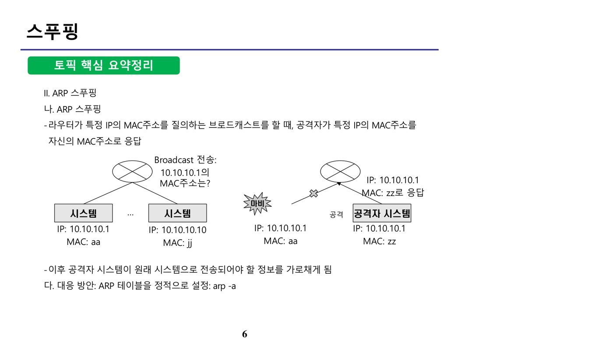
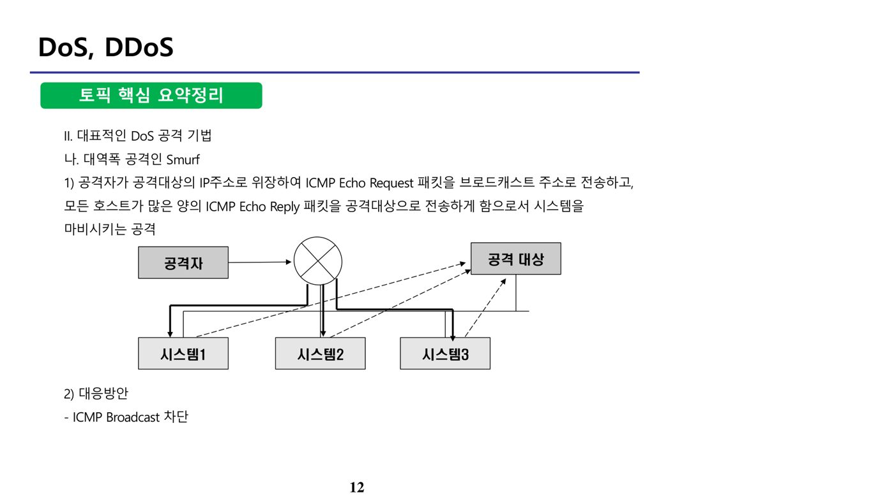
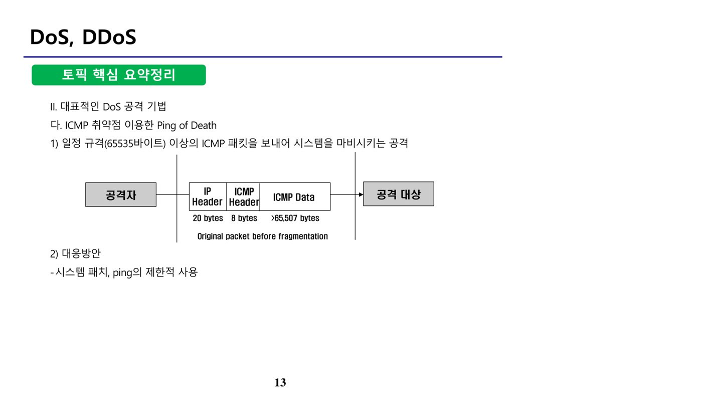
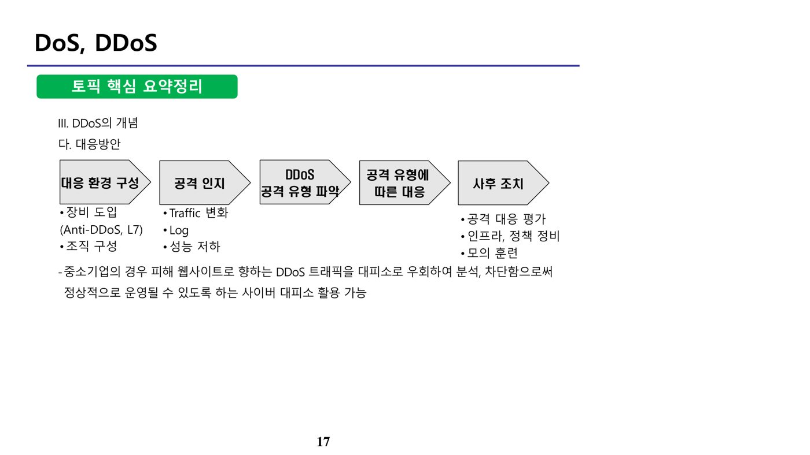
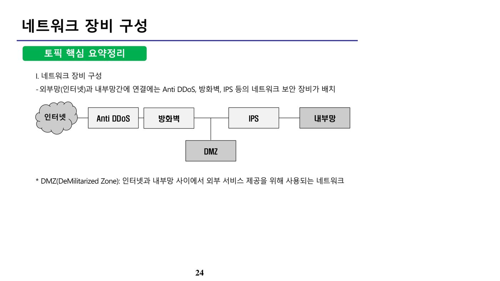
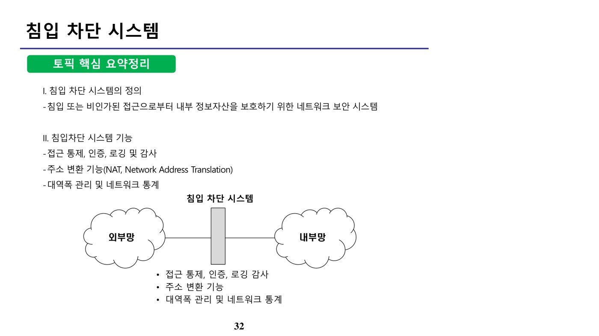

1. OSI 7 Layer와 TCP/IP (원본 p.2-3)
가. OSI 7계층
| 계층 | 설명 | |
|---|---|---|
| 7계층 | Application Layer | 일반적인 응용 서비스 수행 |
| 6계층 | Presentation Layer | 입출력 데이터를 하나의 표현형태로 변환, 암호화 및 압축 등 |
| 5계층 | Session Layer | 양 끝단의 응용 프로세스가 통신을 관리하기 위한 방법 제공, Port 기반 |
| 4계층 | Transport Layer | 신뢰성 있는 통신 보장, 시퀀스 넘버 기반 오류 제어, 세그먼트 단위 |
| 3계층 | Network Layer | IP주소 기반 목적지 전송 정의, Point-to-Point 라우팅·흐름제어·세그멘테이션·오류제어, 패킷 단위 |
| 2계층 | Data Link Layer | CRC 오류제어·흐름제어를 통한 안정적인 정보 전달, 프레임 단위 |
| 1계층 | Physical Layer | 실제 장치를 연결하는 데 필요한 전기적·물리적 세부 사항 정의, 비트 단위 |
나. TCP/IP 계층
| TCP/IP 계층 | 장비/프로토콜 | 대응 OSI 7 Layer |
|---|---|---|
| Application Layer(응용 계층) | FTP, SMTP, DNS, SNMP, TELNET, WWW 등 | Application / Presentation / Session Layer |
| Transport Layer(전송 계층) | TCP, UDP | Transport Layer |
| Internet Layer(인터넷 계층) | 라우터/IP, ICMP | Network Layer |
| Network Interface(네트워크 접근 계층) | 스위치·브릿지/PPP, 허브·리피터/Ethernet | Data Link / Physical Layer |
TCP/IP는 OSI 7계층의 응용·표현·세션 계층을 하나의 응용 계층으로 통합하고, 네트워크 접근 계층이 데이터링크·물리 계층을 함께 담당하는 4계층 구조로 단순화한 모델이다.
2. 스푸핑 (원본 p.4-9)
스푸핑(Spoofing)이란 공격자가 자신의 신원 정보(IP·MAC·도메인·메일 발신자 등)를 위장하여 상대방을 속이는 공격 기법이다.
가. 스푸핑의 유형
| 유형 | 설명 |
|---|---|
| DNS 스푸핑 | 도메인 정보를 위장하여 공격자가 원하는 웹사이트로 접속되도록 하는 공격 기법 |
| 이메일 스푸핑 | 피싱·스캠 등 추가 공격을 위해 이메일 발신 정보를 위장하는 공격 |
| ARP 스푸핑 | ARP(Address Resolution Protocol) 정보를 위장해 중간자(MITM, Man In The Middle) 공격을 수행하기 위한 공격 |
| IP 스푸핑 | IP 주소를 위장하여 신뢰된 네트워크에 접속하기 위한 공격 |
나. ARP 스푸핑
동일한 LAN에서 IP 주소와 MAC 주소는 ARP 테이블을 통해 변환되는데, 정상적으로는 ① 라우터가 동일 LAN에 속한 시스템에 특정 IP의 MAC 주소를 묻는 브로드캐스트를 전송하면 → ② 해당 IP를 가진 시스템이 자신의 MAC 주소로 응답하고 → ③ 라우터가 이를 ARP 테이블에 갱신한다. ARP 스푸핑은 이 과정에서 공격자가 자신의 MAC 주소를 정상 시스템의 것으로 위장해 응답함으로써, 원래 시스템으로 전송되어야 할 정보를 가로채는 공격이다.

ARP 스푸핑의 대응 방안은 ARP 테이블을 정적(static)으로 고정 설정(arp -a 등)하여 위조된 응답으로 테이블이 갱신되지 않도록 하는 것이다. ARP 스푸핑은 동일 LAN(로컬 네트워크) 내에서만 성립하는 공격이므로, 서로 다른 망의 접점에서 수행되는 패킷 필터링(방화벽) 방어 우회 기법(IP 스푸핑, 근원지 경로배정 공격, 소형 단편 공격 등)과는 성격이 다르다는 점에 유의한다.
3. DoS, DDoS (원본 p.10-23)
DoS(Denial of Service, 서비스 거부) 공격은 시스템 또는 네트워크 자원을 고갈시켜 정상적인 서비스 제공을 방해하는 공격이며, 크게 자원고갈형, 대역폭 공격, 취약점 이용형으로 구분된다.
| 유형 | 설명 |
|---|---|
| 자원고갈형 | 시스템이 가진 자원을 모두 소모시켜 정상 작동을 못 하게 하는 공격 (예: SYN Flooding) |
| 대역폭 공격 | 네트워크 대역폭(Bandwidth)을 가득 채워 성능을 저하시키는 공격 |
| 취약점 이용 | OS·애플리케이션의 취약점을 이용해 시스템을 오작동·중단시키는 기법 |
가. SYN Flooding (자원고갈형)
TCP 3-way handshake의 취약점을 이용해 공격 대상에 SYN 패킷을 연속으로 보내 자원을 고갈시키는 공격이다. 정상적인 3-way handshake는 클라이언트가 SYN을 보내면 서버가 SYN-ACK로 응답하고 클라이언트가 다시 ACK를 보내며 연결이 완성되지만, 공격자는 마지막 ACK를 보내지 않아 서버가 응답을 계속 대기하게 만든다. 이러한 반쯤 열린 연결(half-open connection)이 누적되어 접속 대기 큐가 가득 차면 서비스가 중지된다. 대응방안으로는 시스템 측에서 큐 크기를 늘리고 대기 시간(Time out)을 줄이며, 네트워크 측에서 발신지 IP를 차단한다.
나. 대역폭 공격 — Smurf
공격자가 공격 대상의 IP 주소로 위장하여 ICMP Echo Request 패킷을 브로드캐스트 주소로 전송하면, 이를 수신한 모든 호스트가 다량의 ICMP Echo Reply 패킷을 공격 대상으로 동시에 전송하게 되어 대상 시스템이 마비되는 공격이다.

대응방안은 ICMP Broadcast를 차단하는 것이다. Fraggle 공격은 Smurf와 유사하나 ICMP 대신 UDP를 사용하는 변형이다.
다. 취약점 이용 — Ping of Death / Land Attack / Teardrop
Ping of Death는 정상 크기(65,507바이트)를 초과하는 규격 이상의 ICMP 패킷을 보내 시스템을 마비시키는 공격이다.

Land Attack은 송신자 IP주소·포트와 수신자 IP주소·포트를 공격 대상의 정보와 동일하게 조작한 패킷을 전송해, 이를 수신한 대상이 자기 자신에게 응답을 반복하는 루프 상태에 빠지며 성능이 저하되도록 하는 공격이다(대응방안: OS 업데이트, 송신자·수신자 IP·포트가 동일한 패킷 차단). Teardrop은 IP 패킷을 잘게 나누어 재조합하는 과정에서 재조합 기준이 되는 offset 값을 조작해 부하를 유발하는 공격이다(대응방안: 운영체제 패치).
라. DDoS의 개념과 대응
DDoS(Distributed Denial of Service)는 공격자가 사전에 공격 도구를 설치해 놓은 좀비 시스템(PC·모바일 등) 수백~수천 대를 이용해 공격 대상을 동시에 공격함으로써 서비스를 오동작 또는 정지시키는 공격이다. 공격자가 C&C(Command & Control) 서버에 명령을 내리면 다수의 좀비 시스템이 공격 대상에 일제히 공격을 수행하며, 대표적인 공격 도구로 Trin00, TFN(Tribe Flooding Network), TFN2K, Stacheldraht 등이 있다.

중소기업의 경우 피해 웹사이트로 향하는 DDoS 트래픽을 대피소로 우회시켜 분석·차단함으로써 서비스가 정상적으로 운영되도록 하는 사이버 대피소를 활용할 수 있다. DDoS 공격은 백신 프로그램만으로는 막을 수 없으나 Anti-DDoS 장비 등 네트워크 차원의 대응으로 방어가 가능하며, 인터넷 이용 시 설치되는 ActiveX 프로그램도 좀비 PC 감염 경로로 악용되어 DDoS 공격에 이용될 수 있다.
마. 관련 기출 개념 정리
TCP 3-way handshake의 취약점을 이용하는 대표적인 공격은 세션 하이재킹(Session Hijacking)이며, 이는 정상 TCP 세션을 가로채는 공격이다. 분석 대상 네트워크에서 열려 있는 포트를 확인하여 운영 중인 서비스를 파악하는 도구로는 nmap(포트 스캐닝 도구)이 사용된다. iptable은 오픈소스 방화벽, snort는 룰 기반 오픈소스 침입탐지시스템, tripwire는 파일 무결성 점검 도구로 각각 nmap과 구분된다.
4. 네트워크 장비 구성 (원본 p.24-32)
외부망(인터넷)과 내부망 간의 연결에는 Anti-DDoS, 방화벽, IPS 등의 네트워크 보안 장비가 순서대로 배치된다.

DMZ(DeMilitarized Zone)는 인터넷과 내부망 사이에서 외부 서비스 제공을 위해 사용되는 네트워크로, 웹 서버·e메일 서버·DNS 서버 등 외부에 공개해야 하는 서버들이 위치한다. 반면 데이터베이스 서버는 민감한 데이터를 다루므로 DMZ가 아닌 내부망에 위치시켜야 한다.
가. 네트워크 보안 시스템의 역할
| 시스템 | 설명 |
|---|---|
| Anti-DDoS | DDoS 트래픽 유입을 탐지하고 차단 |
| 방화벽(침입차단시스템, Firewall) | 서로 다른 네트워크 간에 전송되는 패킷을 허용·차단 |
| 침입방지시스템(IPS) | Ruleset을 기반으로 공격을 인지하고 차단 |
| NAT(Network Address Translation) | 내부망의 IP 주소·포트 번호를 외부망에서 알아낼 수 없도록 변환하여, 외부에서 스니핑하더라도 내부 통신 정보를 알아내지 못하게 함 |
내부망 IP·Port 정보를 외부로부터 은닉하려는 요구사항에는 NAT가 적절하며, IDS(침입탐지)·Anti-Virus(백신)·Honeypot(공격자 유인 시스템으로 대응시간 확보·공격 패턴 분석용)은 이러한 주소 은닉 기능을 직접 제공하지 않는다.
IP주소·Port 번호 기반의 사전 트래픽 차단에는 침입차단시스템(방화벽)이, 외부에서 내부망으로 접근할 때의 암호통신 보호에는 VPN이 적합하다. 일반적인 네트워크 구축(방화벽·DMZ·VPN 구성)에 안티바이러스는 직접적인 구성 요소가 아니다.

5. 침입 차단 시스템 (원본 p.33-48)
가. 침입 차단 시스템의 세대별 유형
| 단계 | 유형 | 설명 |
|---|---|---|
| 1세대 | 패킷 필터링(Packet Filtering) | Network Layer·Transport Layer에서 동작. 특정 프로토콜·IP주소·포트 번호로 접근 통제 |
| 2세대 | 응용 수준 게이트웨이(Application Level Gateway) | Application Layer에서 동작. 서비스별 프락시(Proxy) 서버 기능을 제공해 망 간 직접 패킷 교환을 허용하지 않음 |
| 2세대 | 서킷 수준 게이트웨이(Circuit Level Gateway) | Application·Session Layer에서 동작. 어느 응용프로그램에서도 사용 가능한 일반적 프락시 사용 |
| 3세대 | 상태 감시(Stateful Inspection) | 내부망에서 출발한 모든 패킷의 목적지 IP를 저장해두고, 응답 패킷이 실제 자신이 보낸 요청에 대한 것인지 확인하여 통과 여부를 결정 |
| 기타 | 하이브리드(Hybrid) | 두 개 이상의 유형을 조합하여 사용 |
패킷 헤더뿐 아니라 메시지(콘텐츠) 수준에서 모니터링·차단이 필요할 때는 어플리케이션 프록시(응용 수준 게이트웨이)가 적합하며, 패킷 필터링 라우터·상태검사 패킷필터·회로레벨 게이트웨이는 메시지 수준까지는 검사하지 않는다. 침입차단시스템(L3 이상)이 사용하는 정보는 IP 주소(L3)·프로토콜 유형·포트 번호(L4)이며, Ethernet 주소(L2)는 사용 대상이 아니다.
나. 침입 차단 시스템의 구축 형태
| 유형 | 설명 |
|---|---|
| 배스천 호스트(Bastion Host) | 내부 네트워크에 진입하기 위한 지점에 위치하여 통제·인증·로깅 수행(인증 기능도 제공함) |
| 스크리닝 라우터(Screening Router) | 패킷 헤더 내용을 보고 필터링 기능이 추가된 라우터. 네트워크 단에서 동작해 상대적으로 속도는 느리고 세부 규칙 적용이 어려우며, 규칙 수 증가가 부하를 높임 |
| 이중 홈 게이트웨이(Dual Homed Gateway) | 두 개의 NIC를 가진 배스천 호스트로, 하나는 외부망, 다른 하나는 내부망에 연결. 설치·유지보수가 상대적으로 쉽고 응용 서비스 종류에 종속적이므로 스크리닝 라우터보다 안전 |
| 스크린 호스트 게이트웨이(Screened Host Gateway) | 배스천 호스트와 스크리닝 라우터를 혼합 — (인터넷)–(스크리닝 라우터)–(배스천 호스트)–내부망. 네트워크 계층과 응용 계층에서 모두 방어하여 공격이 어려움 |
| 스크린 서브넷 게이트웨이(Screened Subnet Gateway) | 두 개 이상의 스크리닝 라우터 조합으로 배스천 호스트가 격리된 DMZ에 위치. 설치가 어렵고 구축 비용이 높으며 서비스 속도가 저하됨 |
| 프락시 서버 호스트(Proxy Server Host) | 서버와 사용자 사이에서 프락시가 데이터를 중계 전송 |
다. 오픈소스 방화벽 iptables
iptables는 rule 기반 패킷 필터링과 주소 변환(NAT)을 수행하는 리눅스 커널 netfilter 기능의 관리 도구다. 패킷이 이동하는 경로(chain) 유형은 다음과 같다.
| 유형 | 설명 |
|---|---|
| INPUT | 방화벽이 최종 목적지인 패킷 |
| OUTPUT | 방화벽을 출발지로 하는 패킷 |
| FORWARD | 방화벽을 경유하는 패킷 |
주요 옵션은 -A(정책 추가), -D(정책 삭제), -F(전체 정책 삭제), -L(정책 출력), -P(기본 정책 변경), -p(프로토콜 지정), -s/-d(출발지/목적지 주소), -i/-o(입력/출력 인터페이스), --sport/--dport(출발지/목적지 포트), -j ACCEPT/DROP/REJECT/LOG(패킷 처리 방식 지정) 등이 있다.
라. 침입탐지 모델 — 오용 탐지 vs 비정상행위 탐지
| 구분 | 탐지 방식 |
|---|---|
| 오용 침입탐지(Misuse Detection) | 전문가 시스템 — 침입·오용 패턴을 실시간 감사정보와 비교하여 탐지 |
| 상태전이 모델 — 공격 패턴에 따른 상태전이도를 미리 정의하고 실시간 이벤트로 상태 변화를 추적하여 침입 여부를 판단 | |
| 비정상행위 탐지(Anomaly Detection) | 통계적 분석 방법 — 정상행위 통계 프로파일과 실제 행위를 비교해 임계치 이상 차이를 보이는 행위를 탐지 |
| 신경망 모델 — 사용자 행위정보를 학습하고 입력 이벤트를 학습된 행위정보와 비교하여 탐지 |
침입탐지 결과는 실제 상태와 판정 결과의 조합에 따라 4가지로 구분된다: True Positive(비정상 행위를 비정상으로 정확히 인식), False Positive(오탐 — 정상 행위를 비정상으로 오인식), False Negative(미탐 — 비정상 행위를 정상으로 오인식하여 놓침), True Negative(정상 행위를 정상으로 정확히 인식). 침입자의 행위가 정상 사용자와 유사해 탐지에 실패하는 상황은 False Negative(미탐)에 해당한다.
📚 전체 기출·예상문제 (20문항) — 원문 수록
본 강좌 원본 PDF에 수록된 기출·예상문제를 문항별로 재구성했습니다. 원본에는 한 페이지에 서로 다른 문제가 뒤섞여 추출되어 있던 부분을 분리했으며, 문항별 정답은 원문의 O/X 해설과 대조하여 검증했습니다.